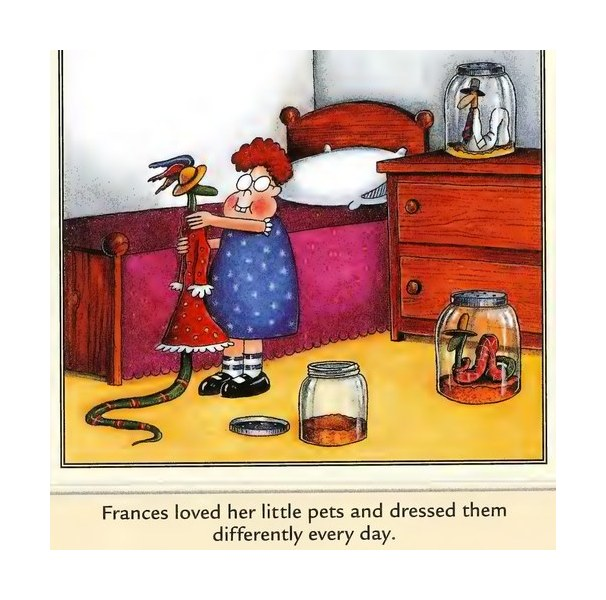

ONYX SYSTEMSFriday, July 17th, 2026
Your Daily Computer Brief
— 7-Zip Just Patched a Dangerous Flaw
A serious security hole (CVE-2026-14266) was disclosed today in 7-Zip, the free file compressor a lot of folks use. If you open a malicious .7z file or visit a bad webpage, an attacker could run code on your PC — drop malware, even ransomware. The fix is simple: update 7-Zip to version 26.02. Open 7-Zip, click Help, then Check for Updates. *Source: eventussecurity / Cybersecurity News — July 17, 2026*
Today in Tech
- Microsoft's July Patch Tuesday fixed a record 622 Windows flaws and started forcing the old Kerberos RC4 protocol off. Update Windows now. (Source: Cybernews — July 14, 2026)
- Nvidia and Japan launched a national AI computing infrastructure this week — part of a wave putting AI chips into ordinary PCs. (Source: The Neuron — July 16, 2026)
- Windows 10 support ends October 14, 2026. If your PC still runs it, now's the time to plan an upgrade — bring it in for a free check. (Source: Microsoft)
Daily Tip
Click the Start button (bottom-left corner), type "Devices and Printers," and open it. Right-click your printer, choose "See what's printing." At the top, click "Printer," then "Cancel All Documents." Your printer stops humming and finally prints the new job.

The Far Side — your daily laugh.